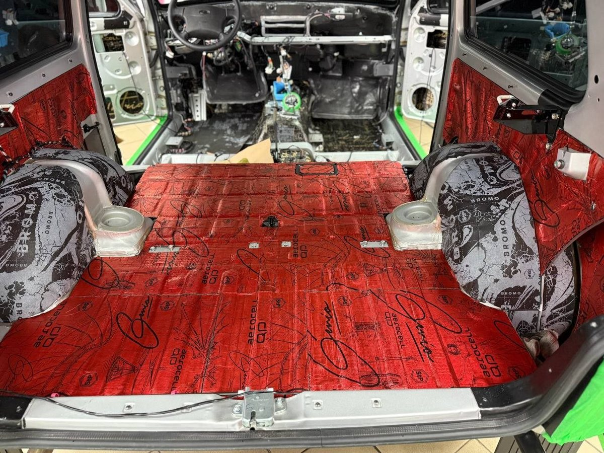
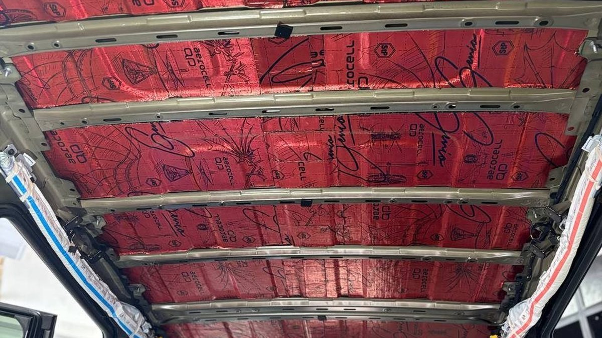
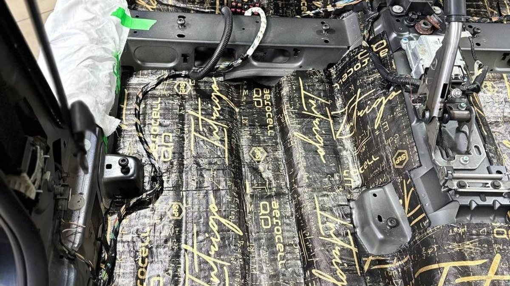

Гул на трассе редко замечают сразу – он копится. Вы выезжаете из Ярославля по М8 в сторону Москвы, в салоне тепло, по радио что-то знакомое. Где-то за Ростовом рука сама тянется к громкости, потом ещё раз. Разговор с соседом превращается в переспрашивание. К Переславлю в голове ровный тяжёлый фон, и вы ловите себя на том, что устали так, будто не ехали, а таскали мешки.
Машина при этом исправна. Ничего не стучит, не скрипит, не дует из щелей. Просто на скорости и на грубом асфальте салон наполняется шумом, к которому вы привыкли и перестали его слышать. Ухо привыкло, а голова – нет.

Главная ошибка – считать гул чем-то одним и бороться с ним одним способом. На трассе в салон приходят как минимум три разных шума, и у каждого своя дорога.
Первый – от шин. Резина катится по асфальту, вибрация уходит в подвеску и кузов, а снизу через пол и колёсные арки слышен тот самый низкий гул. На свежем ровном покрытии его почти нет, на старом и шершавом он нарастает сразу. Зимой, на шипах, к нему добавляется хруст.
Второй – от воздуха. Ветер обтекает стойки, зеркала, уплотнители дверей. Это шум повыше, шелестящий, и он растёт вместе со скоростью.
Третий – от самого кузова. Тонкие панели крыши, дверей, пола под нагрузкой начинают дрожать и сами становятся динамиками. Отсюда низкое гудение, которое чувствуется почти телом.
Прежде чем что-то решать, послушайте свою машину. В следующий раз на трассе сделайте три вещи.
Переедьте с шершавого участка на гладкий и обратно. Если гул заметно меняется – значит, большая часть шума идёт от шин, и путь его – пол и арки.
Сбросьте скорость и прислушайтесь, что уходит первым. Если резко стихает шелест – это ветер, и тут стоит начать с уплотнителей и зазоров.
Включите музыку чуть громче обычного на стоянке и пройдитесь рукой по двери, по пластику, по полке. Если что-то дребезжит и гудит в такт басу – панели живут своей жизнью.

Самый частый путь – купить пару листов материала, обклеить двери и ждать тишины. Тишины не случается. Двери закрываются солиднее, но гул с пола и из арок остаётся на месте, потому что пришёл он совсем не оттуда.
Шумоизоляция автомобиля работает слоями и по зонам. Сначала гасится вибрация металла, потом поглощается то, что уже стало звуком, плюс закрываются щели, через которые он проходит. Если пропустить один слой или одну зону, ухо всё равно найдёт оставшийся источник, и он станет даже заметнее на фоне остальной тишины.
Есть и обратная крайность – залить всё подряд и утяжелить машину без толку. Правильная работа начинается с вопроса, что именно мешает вам и на какой дороге.
Сделайте тот опыт в дороге и запишите, что услышали: гул снизу, шелест сверху или дребезг в дверях. Это уже половина разговора с мастером. Чем точнее вы опишете, где и на какой скорости шумит, тем точнее будет план работ и тем меньше лишнего в счёте.
Если ездите много – в Москву, Вологду или Кострому – начинать стоит с того, что шумит именно у вас, а не с того, что проще разобрать.
Мы в Ярославле – студия «Автостиль», проспект Октября, 82б. Шумоизоляцию в Ярославле мы делаем так, что каждый этап и каждый слой материала попадает в фотоотчёт: вы видите, что лежит под обшивкой, хотя самого монтажа не застаёте. Что входит в работу, смотрите на странице про шумоизоляцию. Стоимость посчитаем по вашей машине – позвоните: +7 902 220-75-55.